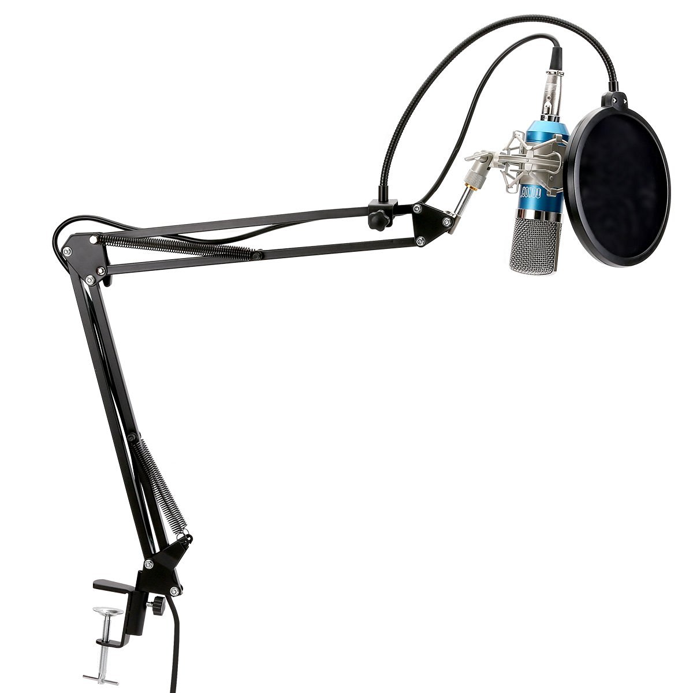
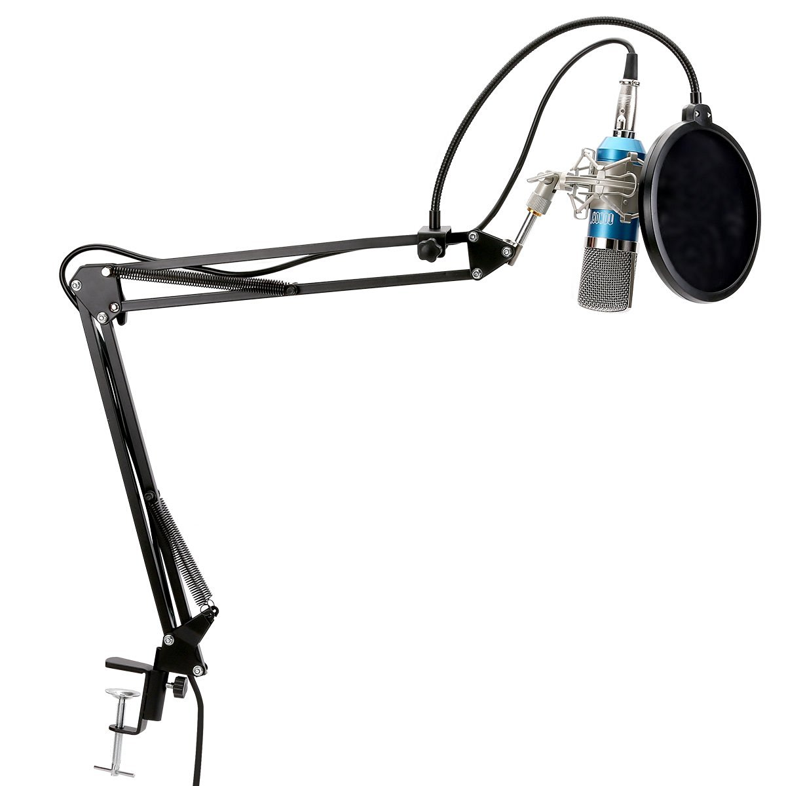

Clavier Logitec G105


prix neuf: 44,80€ vendu: 20,00€
+ info sur AmazonG105 GAMING KEYBOARD L'outil indispensable pour les mordus de jeux Jouez jusqu'au bout de la nuit grâce au rétroéclairage LED. Les six touches programmables et leurs trois modes respectifs permettent de configurer jusqu'à 18 macros par jeu. Vous pouvez effectuer de simples actions ou exécuter des macros complexes avec des frappes de touche multiples, des événements de souris et définir vous-même des délais ou des répétitions. Vous pouvez même enregistrer de nouvelles macros à la volée. Les fonctions "anti-ghosting" et de mémorisation de frappes avancées vous permettent d'effectuer des actions complexes et plus nombreuses sans les interférences ou le "ghosting" que présentent d'autres claviers. Les commandes multimédia à accès direct vous offrent un contrôle accru à portée de main. Un bouton de mode jeu/bureau permet également de désactiver les touches Windows/Menu contextuel qui risqueraient d'interrompre votre partie en cas d'utilisation accidentelle.


 
